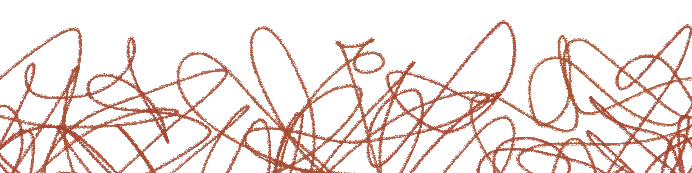

Úgy tűnik, mintha a döntés a kezedben lenne, de valójában egyik lehetőség sem vezet oda, amerre valójában menni szeretnél. Egy idő után egyre világosabbá válik számodra, hogy nem választhatsz szabadon, csak megpróbálod a legkevésbé rossz utat megtalálni magadnak.
Lapozz a X. oldalra és a felbukkanó lehetőségek közül válassz egyet!
